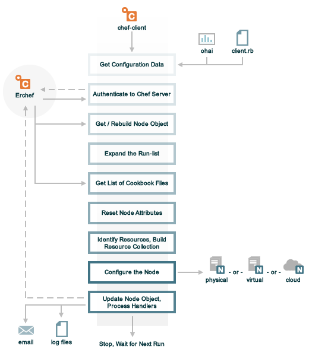

A “Chef run” is the term used to describe a series of steps that are taken by the chef-client when it is configuring a node. The following diagram shows the various stages that occur during the Chef run, and then the list below the diagram describes in greater detail each of those stages.
During every Chef run, the chef-client does the following:
| Stages | Description |
|---|---|
| Get configuration data | The chef-client gets process configuration data from the client.rb file on the node, and then gets node configuration data from Ohai. One important piece of configuration data is the name of the node, which is found in the node_name attribute in the client.rb file or is provided by Ohai. If Ohai provides the name of a node, it is typically the FQDN for the node, which is always unique within an organization. |
| Authenticate to the Chef Server | The chef-client authenticates to the Chef Server using an RSA private key and the Chef Server API. The name of the node is required as part of the authentication process to the Chef Server. If this is the first Chef run for a node, the chef-validator will be used to generate the RSA private key. |
| Get, rebuild the node object | The chef-client pulls down the node object from the Chef Server. If this is the first Chef run for the node, there will not be a node object to pull down from the Chef server. After the node object is pulled down from the Chef Server, the chef-client rebuilds the node object. If this is the first Chef run for the node, the rebuilt node object will contain only the default run-list. For any subsequent Chef run, the rebuilt node object will also contain the run-list from the previous Chef run. |
| Expand the run-list | The chef-client expands the run-list from the rebuilt node object, compiling a full and complete list of roles and recipes that will be applied to the node, placing the roles and recipes in the same exact order they will be applied. |
| Get a list of cookbook files | The chef-client asks the Chef Server for a list of all cookbook files (including recipes, templates, resources, providers, attributes, libraries, and definitions) that will be required to do every action identified in the run-list for the rebuilt node object. The Chef Server provides to the chef-client a list of all of those files. The chef-client compares this list to the cookbook files cached on the node (from previous Chef runs), and then pulls down a copy of every file that has changed since the previous Chef run, along with any new files. |
| Reset node attributes | All attributes in the rebuilt node object are reset. All attributes from recipes, roles, environments, Ohai and attribute files are loaded. All attributes in the rebuilt node object are updated with the attribute data according to attribute precedence. When all of the attributes are updated, the rebuilt node object is complete. |
| Identify resources, build the resource collection | The chef-client identifies each resource in the node object and builds the resource collection. All details about the node are put into a single collection. All definitions are loaded (to ensure that any pseudo-resources are available). All libraries are loaded (to ensure that all language extensions and Ruby classes are available). All recipes are loaded and each action specified specified in recipes are identified and any Ruby blocks within recipes are evaluated. |
| Configure the node | The chef-client configures the system based on the information that has been collected. Each resource in the resource collection is mapped to a provider. The provider examines the node, and then does the steps necessary to complete the action. Each action configures a specific part of the system. This process is also referred to as convergence. |
| Update the node object, process exception and report handlers | When all of the actions identified by resources in the resource collection have been done, the chef-client updates the node object on the Chef Server with the node object that was built during this Chef run. (This node object will be pulled down by the chef-client during the next Chef run.) This makes the node object (and the data in the node object) available for search. The chef-client checks the resource collection for the presence of exception and report handlers. If any are present, each one is processed appropriately. |
| Stop, wait for the next run | When everything is configured and the Chef run is complete, Chef stops and waits until the next time it is asked to run. |